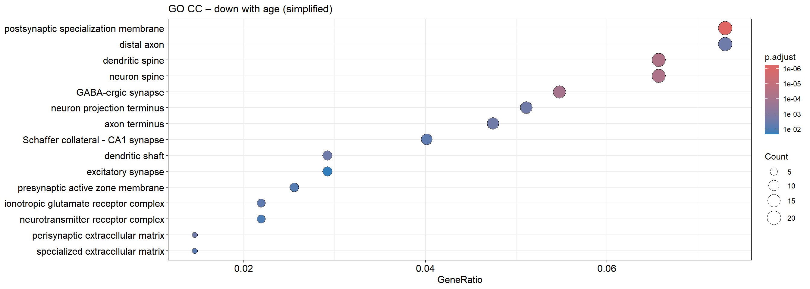

baseMean log2FoldChange lfcSE stat pvalue
Gpr17 159.0450 -0.05890702 0.005351874 -11.006803 3.543541e-28
Pcdhb9 181.7831 0.04646533 0.005433934 8.550956 1.220728e-17
Hapln2 151.1742 0.05015503 0.006060622 8.275558 1.278549e-16
Flywch1 3903.4383 0.01168213 0.001469826 7.947968 1.895949e-15
Klhl1 25.9399 -0.08813600 0.011636957 -7.573801 3.624582e-14
Cabp7 200.0974 0.03986813 0.005401458 7.380994 1.571120e-13
padj gene group
Gpr17 5.015882e-24 Gpr17 Down with age
Pcdhb9 8.639706e-14 Pcdhb9 Up with age
Hapln2 6.032623e-13 Hapln2 Up with age
Flywch1 6.709289e-12 Flywch1 Up with age
Klhl1 1.026119e-10 Klhl1 Down with age
Cabp7 3.706534e-10 Cabp7 Up with age
# Universe = all tested genes with a padj (background)gene_universe <- res_age_df$gene[!is.na(res_age_df$padj)]# Significant age-DE genessig_age_all <- sig_age$genesig_age_up <- sig_age$gene[sig_age$padj <0.05& sig_age$log2FoldChange >0]sig_age_down <- sig_age$gene[sig_age$padj <0.05& sig_age$log2FoldChange <0]length(gene_universe); length(sig_age_up); length(sig_age_down)
[1] 14155
[1] 247
[1] 279
# Convert IDs to Entrez# Note: enrichGO() works fine with SYMBOLs and converts back to SYMBOL anyway so this is slightly redundant if we're correct... but KEGG needs Entrez universe_entrez <-bitr(gene_universe,fromType = id_type,toType ="ENTREZID",OrgDb = org.Mm.eg.db) %>%distinct(ENTREZID)sig_up_entrez <-bitr(sig_age_up,fromType = id_type,toType ="ENTREZID",OrgDb = org.Mm.eg.db) %>%distinct(ENTREZID)sig_down_entrez <-bitr(sig_age_down,fromType = id_type,toType ="ENTREZID",OrgDb = org.Mm.eg.db) %>%distinct(ENTREZID)nrow(universe_entrez); nrow(sig_up_entrez); nrow(sig_down_entrez)
dotplot(ego_up, showCategory =15, title ="GO BP – Genes up with age", label_format =60)
dotplot(ego_down, showCategory =15, title ="GO BP – Genes down with age", label_format =60)
ego_up_simpl <-simplify( ego_up,cutoff =0.7, by ="p.adjust",select_fun = min)dotplot(ego_up_simpl, showCategory =15, title ="GO BP – up with age (simplified)", label_format =60)
Many of the associated BP correspond to upregulated immune processes and increased inflammation with age.
ego_down_simpl <-simplify( ego_down,cutoff =0.7, by ="p.adjust",select_fun = min)dotplot(ego_down_simpl, showCategory =15, title ="GO BP – down with age (simplified)", label_format =60)
Many of the downregulated BP terms correspond to decreased metabolic and biosynthetic processes with age which makes sense if we think of it as a decrease in neuro plasticity with age.
The heatmaps and netplot allow us to identify hub genes that bridge multiple GO BP terms. These hub genes may be key drivers of the age-related changes we observe. We observe the Camp Gene which is involved in immune response and inflammation against microbial and viral infections. It links the humoral immune response to carboxylic acid biosynthetic processes and cell killing. One could hypothesise that it leads to increased inflammation by a mechanism associated with carboxylic acid biosynthesis. Furthermore we also observe a strong link between cell killing and T cell mediated cytotoxicity and similar processes, indicating that T cells may play a key role in age-related inflammation and cell death in the motor cortex. The down regulated processes are quite densily connected, with many genes linking multiple processes, related to synapse structure, organization and activity. This indicates that multiple genes may be involved in the age-related decline in synaptic function and plasticity and it seems to be a complex change on a system level rather than single key driver genes.
# Sample code to extract genes of specific GO BPego_up_genes_annot %>%filter(Description =="carboxylic acid biosynthetic process") %>%arrange(padj) %>%head(20)
dotplot(ego_cc_up, showCategory =15, title ="GO CC – Genes up with age", label_format =60)
dotplot(ego_cc_down, showCategory =15, title ="GO CC – Genes down with age", label_format =60)
dotplot(ego_mf_up, showCategory =15, title ="GO MF – Genes up with age", label_format =60)
dotplot(ego_mf_down, showCategory =15, title ="GO MF – Genes down with age", label_format =60)
GO CC and MF simplified
ego_cc_up_simpl <-simplify(ego_cc_up,cutoff =0.7,by ="p.adjust",select_fun = min)dotplot(ego_cc_up_simpl, showCategory =15,title ="GO CC – up with age (simplified)",label_format =60)
ego_cc_down_simpl <-simplify(ego_cc_down,cutoff =0.7,by ="p.adjust",select_fun = min)dotplot(ego_cc_down_simpl, showCategory =15,title ="GO CC – down with age (simplified)",label_format =60)

ego_mf_up_simpl <-simplify(ego_mf_up,cutoff =0.7,by ="p.adjust",select_fun = min)dotplot(ego_mf_up_simpl, showCategory =15,title ="GO MF – up with age (simplified)",label_format =60)
ego_mf_down_simpl <-simplify(ego_mf_down,cutoff =0.7,by ="p.adjust",select_fun = min)dotplot(ego_mf_down_simpl, showCategory =15,title ="GO MF – down with age (simplified)",label_format =60)
dotplot(reactome_up, showCategory =15, title ="Reactome – Genes up with age", label_format =60)
dotplot(reactome_down, showCategory =15, title ="Reactome – Genes down with age", label_format =60)
Save results
## Save resultssaveRDS(ego_up, "results/go_bp_age_up.rds")saveRDS(ego_down, "results/go_bp_age_down.rds")saveRDS(ekegg_up, "results/kegg_age_up.rds")saveRDS(ekegg_down, "results/kegg_age_down.rds")saveRDS(ego_up_simpl, "results/go_bp_age_up_simpl.rds")saveRDS(ego_down_simpl, "results/go_bp_age_down_simpl.rds")# ReactomesaveRDS(reactome_up, "results/reactome_age_up.rds")saveRDS(reactome_down, "results/reactome_age_down.rds")# GO CCsaveRDS(ego_cc_up, "results/go_cc_age_up.rds")saveRDS(ego_cc_down, "results/go_cc_age_down.rds")saveRDS(ego_cc_up_simpl, "results/go_cc_age_up_simpl.rds")saveRDS(ego_cc_down_simpl,"results/go_cc_age_down_simpl.rds")# GO MFsaveRDS(ego_mf_up, "results/go_mf_age_up.rds")saveRDS(ego_mf_down, "results/go_mf_age_down.rds")saveRDS(ego_mf_up_simpl, "results/go_mf_age_up_simpl.rds")saveRDS(ego_mf_down_simpl,"results/go_mf_age_down_simpl.rds")
Ideas / ToDo
# GO Annotations for CC (cellular components) and MF (molecular functions) ontologies# Use simplify on GO BP -> similar method for KEGG?# Try out GSEA (gene set enrichment analysis) instead of ORA (over-representation analysis)# Try out other pathway databases, e.g. ReactomePA# Visualize enriched pathways with pathview